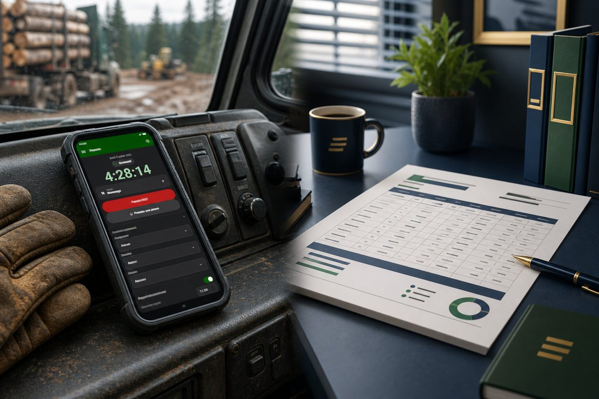

The pencil in the cab is expensive
Every Monday morning, the same scene plays out in forestry offices across Quebec. Scribbled scraps of paper, hours texted in a hurry, numbers you can barely read, and a coordinator retyping all of it, line by line, into a spreadsheet. An hour here, half a day there. The time it takes is time nobody bills. And when an operator forgets to log a shift, you can count on an argument come payday.
Electronic time tracking exists precisely to kill that chore. The idea is simple: the operator clocks in once, out in the field, and that data travels all the way to payroll prep without ever being retyped. Here is how it actually works with MobileLogix and ForestLogix, the two G.A. Logix software tools built for the forestry world.
One tap to start the day
It all starts in MobileLogix, the field app that runs on Android. The heart of it is a start/stop session button. The operator gets to the job site, opens the app, taps the button. The day starts. In the evening, one more tap to stop. That is it.
No form to fill, no box to check, no math to do in your head. As Joseph, co-founder of G.A. Logix, puts it: one tap to start or stop the day, with no risk of forgetting.
While the session runs, the screen shows:
- The running duration of the current session, a timer visible at all times
- The day's schedule, so the operator knows where things stand
- The link to the logged-in employee, so the right time lands on the right person
Each punch is tied to the employee logged into the app. No ambiguity about who worked when.
The notification that stays on screen
On Android, MobileLogix keeps a notification on screen as long as a session is active. The system keeps the session alive and shows at all times that the clock is running. For the operator, that means one important thing in the field: a quick glance confirms the time is counting, even with the phone tucked in a pocket. No more "wait, did I actually start my shift this morning?".
The punch on your wrist
The punch also reaches a connected watch. MobileLogix talks to the watch through TrackLogix, another product in the G.A. Logix ecosystem. In practice, an operator wearing gloves with his hands full can glance at his wrist instead of pulling out his phone. Time tracking follows the operator, not the other way around.
From field punch to payroll data
Clocking in the field is only half the story. The other half happens at the office, in ForestLogix, the G.A. Logix management software.
ForestLogix keeps the employee registry: operators, mechanics, foremen, with their personal information, contacts, documents and the data needed for payroll. That includes:
- Each employee's hourly rate
- The time bank (vacation, accrued overtime)
- Payroll parameters (deductions, codes)
The key point: hours clocked in the field and in the cab feed those calculations. Hours captured through logbooks and task tracking become payroll data with no re-keying. For Léo, the contractor running a crew of operators, that is exactly the knot coming undone: hours punched in the cab become data ready for his payroll preparer, instead of getting stuck on a scrap of paper.
For Mélanie, the coordinator, it changes the nature of her Monday morning. Instead of retyping hours, she has visibility on who is where and on the crew's time bank, right in the system.
An important clarification on what the software does, and does not do
At G.A. Logix, we would rather be clear than overpromise. ForestLogix prepares payroll data. It is not a full payroll system. Statutory payroll calculations (source deductions, CNESST, QPIP) and direct deposit belong to your company's payroll software.
In other words, ForestLogix does the thankless upstream work: capturing hours, tying them to the right employee, the right rate, the right time bank. It hands you a clean, solid base. Your payroll preparer keeps their specialized software for the final job. The two complement each other instead of stepping on each other's toes.
The monthly time report, in a few clicks
Once the hours are back at the office, how do you get them out? ForestLogix generates monthly activity reports, what we call a timesheet. These reports are built from data captured in the cab and at the office: logbooks, tasks, hours worked.
The layout is clean, in landscape orientation, with a standard header. And best of all, you choose the output format:
| Need | Delivery option |
|---|---|
| Hand it to the accountant or the client | Print-ready PDF export |
| Send it to a foreman or a client | Automatic email |
| Post it at the office | Direct print |
| Rework the numbers yourself | Excel export |
For Mélanie, the effect is concrete: the monthly crew report is produced in a few clicks instead of a full day of spreadsheet copy-paste. For Léo, it is a clean, professional document he can hand to his accountant or client without a second thought. And for a manager, it is visibility on crew hours by job site without querying four different systems.
What the reporting module is not
Again, we stay honest. The ForestLogix timesheet report is not a real-time dashboard. It is a report generated on demand, when you need it, not a live data feed. You also do not design your own report formats yourself in the software: if you need a new format, the G.A. Logix team builds it for you. That keeps your reports clean and consistent.
What it changes for your week
Let us put things side by side. Here is the difference between tracking hours on paper and end-to-end electronic time tracking in forestry.
| Step | Paper and spreadsheet | G.A. Logix electronic time clock |
|---|---|---|
| Starting the shift | Handwritten note or memory | A tap on the button in MobileLogix |
| Tracking during the day | None, you rely on memory | Visible timer and an on-screen notification |
| Consolidating the hours | Manual retyping at the office | Hours feed ForestLogix directly |
| Payroll preparation | Re-keying the numbers | Data tied to the right employee and rate |
| Monthly report | A full day of copy-paste | A few clicks: PDF, email, print or Excel |
The gain is not just time saved. It is fewer errors, fewer payday arguments, and operators who no longer have to juggle a pencil in a cab that is bouncing around.
Is it right for your operation?
G.A. Logix electronic time tracking is aimed at forestry businesses that live the pain of tracking hours: contractors, cooperatives, forest groups and clients. If you recognize yourself in one of these situations, it is worth a closer look:
- Your operators log their hours on paper or by text
- Someone spends hours retyping those numbers every week
- There are regular discrepancies or missed entries at payroll
- You want a clean report to hand to your accountant or client
- You already run a payroll system, but the step before payroll is a real headache
MobileLogix captures time in the field, ForestLogix turns it into payroll-ready data and professional reports. Two tools built by people who know the forest, in Plessisville.
Take action
The best way to see if it fits your operation is to watch it run with your own scenarios. The G.A. Logix team shows you the punch, the link to payroll and the time reports, live.
Book your free demo by contacting us. We will show you how your hours can travel from the field to payroll without ever going through a pencil.